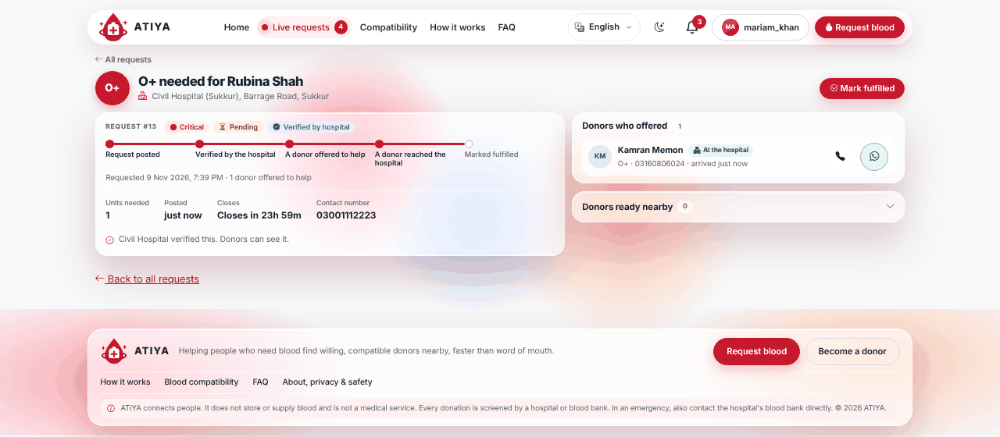
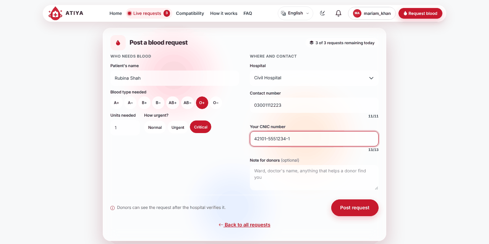
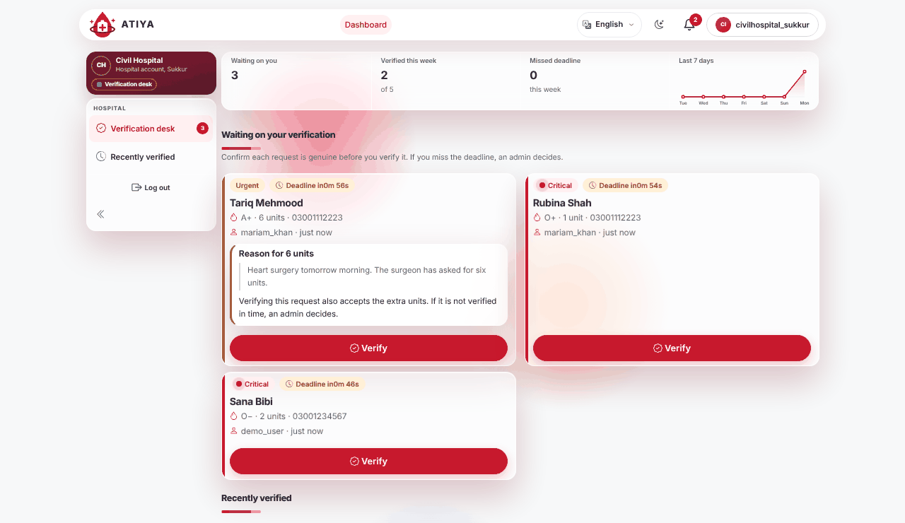
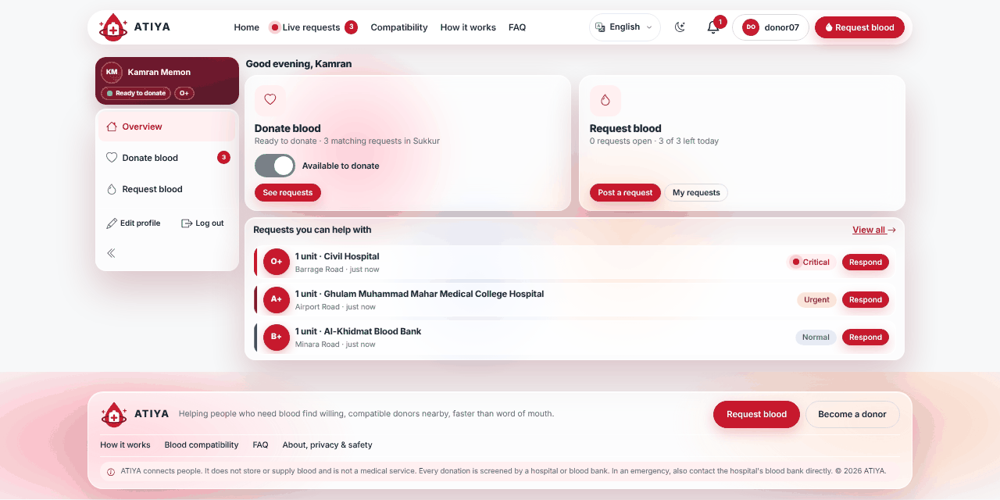
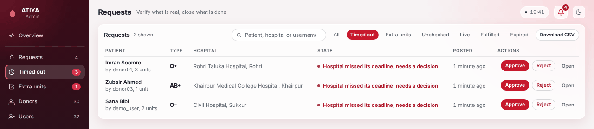
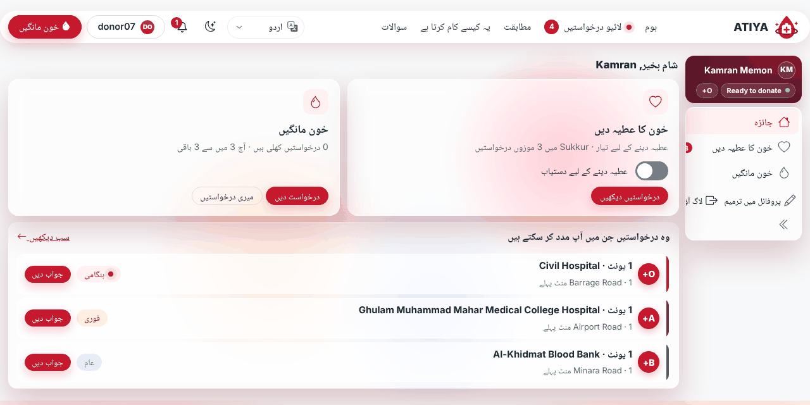
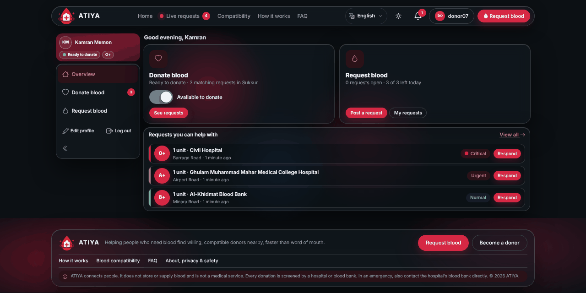
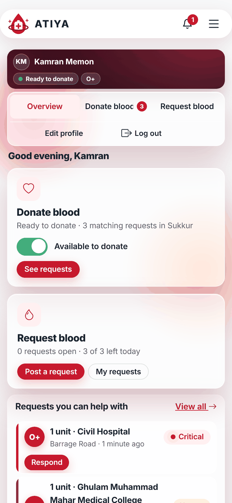

Blood requests a hospital has checked.Shown only to donors who can help.
ATIYA connects people who need blood in Sukkur and nearby cities with compatible, rested donors. The hospital verifies every request first, so donors are not chasing forwarded messages.

A forwarded message can't tell you if the patient is real.
ATIYA replaces the group-chat forward with a request the hospital has confirmed and a donor list that already knows who is eligible.
One request, from post to donation
Pick a step to see the real screen. Every screenshot uses fake demo data.




Four people, four views
- Donor
- Registers with blood type and city, switches availability on or off, sees matching requests, offers to help, and sees when the rest period ends.
- Requester
- Posts up to three requests a day, follows a progress timeline, sees the donor who offered, and marks it fulfilled.
- Hospital
- Has its own login, verifies requests naming it, and is told at each step. Cannot verify a request its own staff posted.
- Admin
- Approves or rejects timed-out and extra-unit requests, manages users and reports, changes settings, and reads the audit log.
Rules that keep it safe
- Hospital first. Hidden from donors until the hospital verifies it.
- Blood compatibility follows the standard chart, tested on all 64 pairs.
- 90-day rest starts automatically when a request is fulfilled.
- One donor per request, and one active offer per donor.
- Hospital deadline is set per urgency; after it an admin decides.
- Extra units need a reason; a verifying hospital accepts them.
- Requests expire after 24, 48 or 72 hours by urgency.
- Three requests per user per day.
- Phone numbers are shown only to the requester, the hospital, admins and the donor who offered.
- CNICs are not stored, only a one-way hash and the last four digits.
- Admins and hospitals stay in their own panels and are signed out after 30 idle minutes.
- Honest labels. Admin-approved is never shown as hospital verified.
Built for Sukkur
Urdu and Sindhi mirror the whole layout right to left. Dark mode is remembered. Every font, icon and script is bundled, so the app works without internet.



Questions people ask
Why would someone donate through ATIYA?
ATIYA does not pay or reward donors. The reason is the same as anywhere: a patient needs blood. ATIYA lowers the effort: donors see only requests they can help with, are never asked while resting, and know a hospital has checked the request.
What if the hospital never verifies?
After its deadline the request moves to an admin, who approves or rejects it. If approved, donors see it labelled "not hospital verified".
What if two donors offer at once?
The first offer closes the request to everyone else. A second donor sees a short message. If the first donor withdraws, it opens again.
Does it track where a donor is?
No. The donor taps "I've reached the hospital". That is all the requester and the hospital learn.
Can a requester edit or cancel?
Not yet. A requester can mark a request fulfilled, and an admin can remove one.
Run it on your computer
You need Python 3.12 or newer.
git clone https://github.com/Harsha-Talreja/Atiya-blood-network.git
cd Atiya-blood-network
python -m venv venv
venv\Scripts\activate # macOS/Linux: source venv/bin/activate
pip install -r requirements.txt
python manage.py migrate
python manage.py set_hospital_logins --password "ChooseAPassword1!"
python manage.py createsuperuser
python manage.py runserver
Then open http://127.0.0.1:8000/. The README has Windows tips, hospital usernames and a five-minute walkthrough.